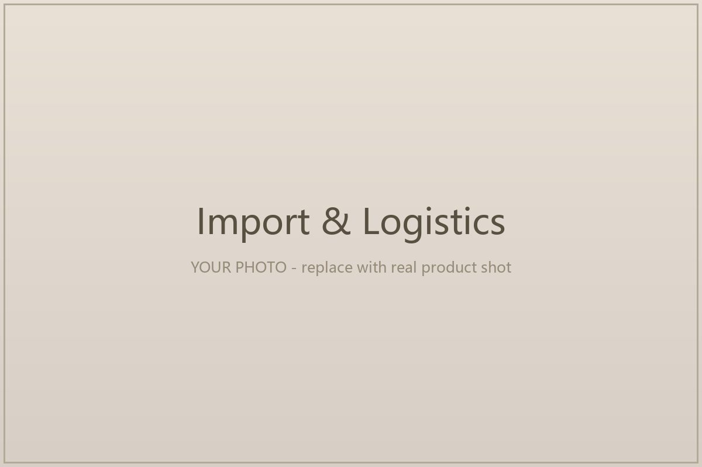

Sourcing
How to import home decor from China without killing your margin
The product price is maybe 60% of your true landed cost. Here's where the other 40% goes — and how to keep it predictable when sourcing soft furnishings.

1. MOQ is a lever, not a wall
Many factories quote high minimums to filter tire-kickers. For cushions, curtains and throws, workable MOQs often start around 200 units per SKU. Mixing SKUs in one container lets you test several designs without over-committing to one.
2. Lead time = production + buffer, not just production
A "25-day" quote usually means production only. Add fabric sourcing, QC, and Chinese New Year blackouts. Build a 10–15 day buffer so a delayed dye lot doesn't miss your sales window.
3. Freight terms change everything
EXW (ex-works) looks cheap but you own everything after the factory gate. FOB is the common middle ground — you control the ocean freight. DDP is turnkey but the supplier's freight markup is baked in. Know which you're quoting.
4. Documentation is margin insurance
Lost or wrong paperwork at customs means demurrage, not just delay. Lock in: commercial invoice, packing list, fibre-content labels, and compliance docs (REACH / OEKO-TEX / CPSIA) matched to your destination.
5. Sample before bulk — always
A $40 sample round saves a $8,000 bad batch. Request a physical sample or a detailed photo set with colour and stitch close-ups before you release the deposit.
Bottom line
Margin dies in the gaps: unnoticed freight terms, surprise compliance docs, and SKUs you over-bought. A factory that hands you a clear quote with lead time, MOQ and documentation listed is worth more than the cheapest unit price.